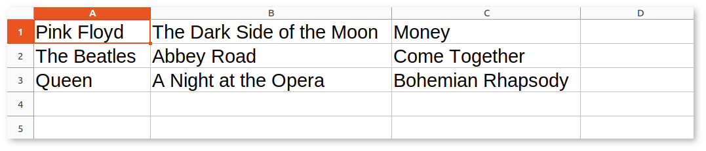
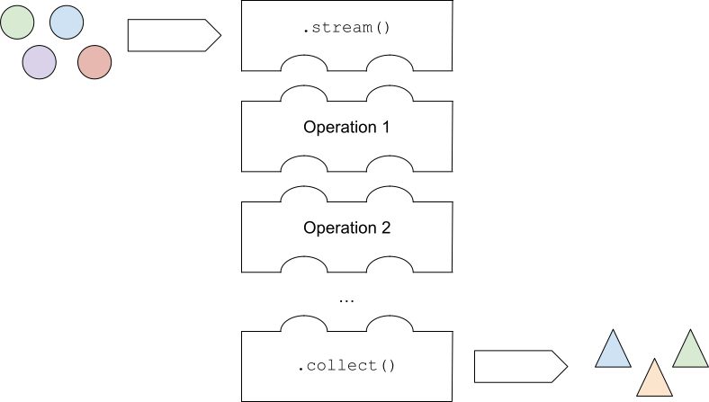
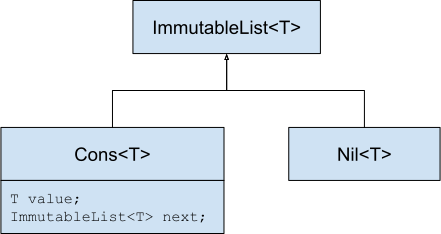
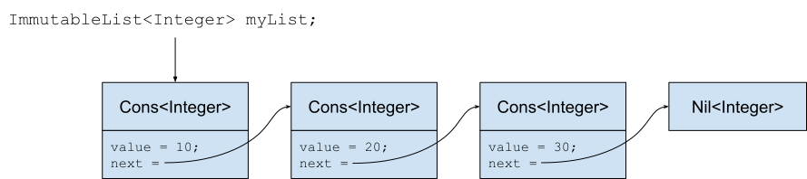

Functional Programming¶
Functional programming refers to a programming paradigm that emphasizes the use of functions and immutable data to create applications. This paradigm promotes writing code that is easier to reason about, and that allows for better handling of concurrency.
While Java is not a pure functional language like Haskell, it offers many features that can be used to write more functional-style code. Functional programming in Java encourages the use of pure functions that have no side effect, i.e., that avoid changing the state of the program. Java 8 introduced features to support functional programming, primarily through the addition of functional interfaces, of lambda expressions, and of the Stream API.
Nesting classes¶
To begin our study of functional programming, we will first go back to the concept of nested classes that has previously been briefly encountered. A nested class is simply a class that is defined within another class. Note that a nested class can also define its own nested classes, just like Matryoshka dolls.
Let us consider the task of creating a spreadsheet application. A spreadsheet document is composed of a number of rows. Each row is made of several columns with string values. A data structure to represent a single row can be modeled as follows:
import java.util.HashMap;
import java.util.Map;
class Row {
private Map<Integer, String> columns = new HashMap<>();
public void put(int column,
String value) {
columns.put(column, value);
}
public String get(int column) {
return columns.getOrDefault(column, "" /* default value if absent */);
}
}
The Row class uses an associative array that maps integers (the index of the columns) to strings (the value of the columns). The use of an associated array allows to account for columns with a missing value. The standard HashMap<K,V> class is used to this end: https://docs.oracle.com/javase/8/docs/api/java/util/HashMap.html
A basic spreadsheet application can then be created on the top of this Row class. Let us define a spreadsheet document as an ordered list of rows:
import java.util.ArrayList;
import java.util.List;
public class Spreadsheet {
private List<Row> rows;
private int sortOnColumn;
public Spreadsheet() {
this.rows = new ArrayList<>();
this.sortOnColumn = 0;
}
public void add(Row row) {
rows.add(row);
sort();
}
public void setSortOnColumn(int sortOnColumn) {
this.sortOnColumn = sortOnColumn;
sort();
}
private void sort() {
// We will implement this later on
}
static private void fillWithSongs(Spreadsheet spreadsheet) {
Row row = new Row();
row.put(0, "Pink Floyd");
row.put(1, "The Dark Side of the Moon");
row.put(2, "Money");
spreadsheet.add(row);
row = new Row();
row.put(0, "The Beatles");
row.put(1, "Abbey Road");
row.put(2, "Come Together");
spreadsheet.add(row);
row = new Row();
row.put(0, "Queen");
row.put(1, "A Night at the Opera");
row.put(2, "Bohemian Rhapsody");
spreadsheet.add(row);
}
static public void main(String[] args) {
Spreadsheet spreadsheet = new Spreadsheet();
fillWithSongs(spreadsheet);
}
}
This Java application creates a spreadsheet with 3 rows and 3 columns that are filled with information about 3 songs. If exported to a real-world spreadsheet application such as LibreOffice Calc, it would be rendered as follows:
Static nested classes¶
We are now interested in the task of continuously sorting the rows according to the values that are present in the columns, as new rows get added to the spreadsheet using the addRow() method.
To this end, the Spreadsheet class contains the member variable sortOnColumn that specifies on which column the sorting must be applied. That parameter can be set using the setSortOnColumn() setter method. We already know that the task of sorting the rows can be solved through delegation to a dedicated comparator:
class RowComparator1 implements Comparator<Row> {
private int column;
RowComparator1(int column) {
this.column = column;
}
@Override
public int compare(Row a, Row b) {
return a.get(column).compareTo(b.get(column));
}
}
public class Spreadsheet {
private List<Row> rows;
private int sortOnColumn;
// ...
private void sort() {
Collections.sort(rows, new RowComparator1(sortOnColumn));
}
}
The RowComparator1 class is called a package-private top-level class because it is located outside of the main Spreadsheet class. This is not an issue because this sample code is quite short. But in real code, it might be important for readability to bring the comparator class closer to the method that uses it (in this case, sort()). This is why Java features static nested classes. This construction allows to define a class at the member level of another class:
public class Spreadsheet {
private List<Row> rows;
private int sortOnColumn;
// ...
private static class RowComparator2 implements Comparator<Row> {
private int column;
RowComparator2(int column) {
this.column = column;
}
@Override
public int compare(Row a, Row b) {
return a.get(column).compareTo(b.get(column));
}
}
private void sort() {
Collections.sort(rows, new RowComparator2(sortOnColumn));
}
}
In this code, RowComparator2 is the static nested class, and Spreadsheet is called its outer class. Note that RowComparator2 could have been tagged with a public visibility to make it accessible outside of Spreadsheet, in the case the developer felt like sorting collections of Row objects could make sense in other parts of the application.
Static nested classes are a way to logically group classes together, to improve code organization, and to encapsulate functionality within a larger class. This promotes a more modular and structured design, in a way that is similar to packages, but at a finer granularity. Note that it is allowed for two different classes to use the same name for a nested class, which can prevent collisions between class names in large applications.
Importantly, static nested classes have access to the private static members of the outer class, which was not the case of the top-level class RowComparator1: This can for instance be useful to take advantage of private enumerations or constants that would be defined inside the outer class.
Inner classes¶
The previous code has however a redundancy: The value of sortOnColumn must be manually copied to a private column variable of RowComparator2 so that it can be used inside the compare() method. Can we do better? The answer is “yes”, thanks to the concept of non-static nested classes, that are formally known as inner classes. Java allows writing:
public class Spreadsheet {
private List<Row> rows;
private int sortOnColumn;
// ...
private class RowComparator3 implements Comparator<Row> {
@Override
public int compare(Row a, Row b) {
return a.get(column).compareTo(b.get(sortOnColumn));
}
}
private void sort() {
Collections.sort(rows, new RowComparator3());
}
}
This is much more compact! In this code, private static class was simply replaced by private class. Thanks to this modification, RowComparator3 becomes an inner class of the outer class Spreadsheet, which grants its compare() method a direct access to the sortOnColumn member variable.
Inner classes look very similar to static nested classes, but they do not have the static keyword. As can be seen, the methods of inner classes can not only access the static member variables of the outer class, but they can also transparently access any member of the object that constructed them (variables and methods, including private members). Note that inner classes were previously encountered in this course when the implementation of custom iterators was discussed.
It is tempting to systematically use inner classes instead of static nested classes. But pay attention to the fact that inner classes induce a much closer coupling with their outer classes, which can make it difficult to refactor the application, and which can quickly lead to the so-called Feature Envy “code smell” (i.e. the opposite of a good design pattern). Use an inner class only when you need access to the instance members of the outer class. Use a static nested class when there is no need for direct access to the outer class instance or when you want clearer namespacing and better code organization.
Syntactic sugar¶
The fact that compare() has access to sortOnColumn might seem magic. This is actually an example of syntactic sugar. Syntactic sugar refers to language features or constructs that do not introduce new functionality but provide a more convenient or expressive way of writing code. These features make the code more readable or more concise without fundamentally changing how it operates. In essence, syntactic sugar is a shorthand or a more user-friendly syntax for expressing something that could be written in a longer or more explicit manner.
Syntactic sugar constructions were already encountered in this course. Autoboxing is such a syntactic sugar. Indeed, the code:
Integer num = 42; // Autoboxing (from primitive type to wrapper)
int value = num; // Auto unboxing (from wrapper to primitive type)
is semantically equivalent to the more explicit code:
Integer num = Integer.valueOf(42);
int value = num.intValue();
Thanks to its knowledge about the internals of the standard java.lang.Integer class, the compiler can automatically “fill the dots” by adding the constructor and selecting the proper conversion method. The enhanced for-each loop for iterators is another example of syntactic sugar, because writing:
List<Integer> a = new ArrayList<>();
a.add(-1);
a.add(10);
a.add(42);
for (Integer item: a) {
System.out.println(item);
}
is semantically equivalent to:
Iterator<Integer> it = a.iterator();
while (it.hasNext()) {
Integer item = it.next();
System.out.println(item);
}
Once the compiler comes across some for() loop on a collection that implements the standard Iterable<E> interface, it can transparently instantiate the iterator and traverse the collection using this iterator.
In the context of inner classes, the syntactic sugar consists in including a reference to the outer object that created the instance of the inner object. In our example, the compiler automatically transforms the RowComparator3 class into the following static nested class:
public class Spreadsheet {
private List<Row> rows;
private int sortOnColumn;
// ...
private static class RowComparator4 implements Comparator<Row> {
private Spreadsheet outer; // Reference to the outer object
RowComparator4(Spreadsheet outer) {
this.outer = outer;
}
@Override
public int compare(Row a, Row b) {
return a.get(outer.sortOnColumn).compareTo(b.get(outer.sortOnColumn));
}
}
private void sort() {
Collections.sort(rows, new RowComparator4(this));
}
}
As can be seen, the compiler transparently adds a new argument to the constructor of the inner class, which contains the reference to the outer object.
Local inner classes¶
So far, we have seen three different constructions to define classes:
Top-level classes are the default way of defining classes, i.e., separately from any other class.
Static nested classes are members of an outer class. They have access to the static members of the outer class.
Inner classes are non-static members of an outer class. They are connected to the object that created them through syntactic sugar.
Inner classes are great for the spreadsheet application, but code readability could still be improved if the RowComparator3 class could somehow be brought inside the sort() method, because it is presumably the only location where this comparator would make sense in the application. This would make the one-to-one relation between the method and its comparator immediately apparent. This is the objective of local inner classes:
private void sort() {
class RowComparator5 implements Comparator<Row> {
@Override
public int compare(Row a, Row b) {
return a.get(sortOnColumn).compareTo(b.get(sortOnColumn));
}
}
Collections.sort(rows, new RowComparator5());
}
In this new version of the sort() method, the comparator was defined within the scope of the method. The RowComparator5 class is entirely local to sort(), and cannot be used in another method or class, which further reduces coupling.
Anonymous inner classes¶
Because local inner classes are typically used at one single point of the method, it is generally not useful to give a name to local inner classes (in the previous example, this name was RowComparator5). Consequently, Java features the anonymous inner class construction:
private void sort() {
Comparator<Row> comparator = new Comparator<Row>() {
@Override
public int compare(Row a, Row b) {
return a.get(sortOnColumn).compareTo(b.get(sortOnColumn));
}
};
Collections.sort(rows, comparator);
}
As can be seen in this example, an anonymous inner class is a class that is defined without a name inside a method and that instantiated at the same place where it is defined.
This construction is often used for implementing interfaces or extending classes on-the-fly. To make this more apparent, note that we could have avoided the introduction of temporary variable comparator by directly writing:
private void sort() {
Collections.sort(rows, new Comparator<Row>() {
@Override
public int compare(Row a, Row b) {
return a.get(sortOnColumn).compareTo(b.get(sortOnColumn));
}
});
}
Anonymous inner classes also correspond to another syntactic sugar construction, because an anonymous inner class can easily be converted into a local inner class by giving it a meaningless name.
Access to method variables¶
Importantly, both local inner classes and anonymous inner classes have access to the variables of their enclosing method.
To illustrate this point, let us consider the task of filling a matrix with a constant value using multiple threads. We could create one thread that fills the upper part of the matrix, and another thread that fills the lower part of the matrix. Using a thread pool and the SynchronizedMatrix class that was defined to demonstrate multithreading, the corresponding implementation could be:
public static void fill1(ExecutorService threadPool,
SynchronizedMatrix m,
float value) throws ExecutionException, InterruptedException {
class Filler implements Runnable {
private int startRow;
private int endRow;
Filler(int startRow,
int endRow) {
this.startRow = startRow;
this.endRow = endRow;
}
@Override
public void run() {
for (int row = startRow; row < endRow; row++) {
for (int column = 0; column < m.getColumns(); column++) {
// The inner class has access to the "m" and "value" variables!
m.setValue(row, column, value);
}
}
}
}
Future upperPart = threadPool.submit(new Filler(0, m.getRows() / 2));
Future lowerPart = threadPool.submit(new Filler(m.getRows() / 2, m.getRows()));
upperPart.get();
lowerPart.get();
}
As can be seen in this example, it is not necessary for the inner class Filler to explicitly store a copy of m and value. Indeed, because those two variables are part of the scope of method fill1(), the run() method has direct access to the m and value variables. Actually, this is again syntactic sugar: The compiler automatically generates a reference to all the local variables of the outer method to the constructor of the inner class.
The method fill1() creates exactly two threads, one for each part of the matrix. One could want to take advantage of a higher number of CPU cores by reducing this granularity. According to this idea, here is an alternative implementation that introduces parallelism at the level of the individual rows of the matrix:
public static void fill2(ExecutorService threadPool,
SynchronizedMatrix m,
float value) throws ExecutionException, InterruptedException {
Stack<Future> pendingRows = new Stack<>();
for (int row = 0; row < m.getRows(); row++) {
final int myRow = row;
pendingRows.add(threadPool.submit(new Runnable() {
@Override
public void run() {
for (int column = 0; column < m.getColumns(); column++) {
m.setValue(myRow, column, value);
}
}
}));
}
while (!pendingRows.isEmpty()) {
pendingRows.pop().get();
}
}
Contrarily to fill1() that used a local inner class, the fill2() method uses an anonymous inner class, an instance of which is created for each row. This construction was not possible in the first implementation, because it had to separately track exactly two futures using two variables, which needed to share the definition of the inner class between the two separate runnables. However, in the second implementation, thanks to the fact that the multiple futures are tracked in a uniform way using a stack, the definition of the inner class can occur at a single place.
There is however a caveat associated with fill2(): One could expect to have access to the row variable inside the run() method, because row is part of the scope of the enclosing method. However, the inner class might continue to exist and be used even after the loop has finished executing and the variable row has disappeared. To prevent potential issues arising from changes to variables after the start of the execution of a method, an inner class is actually only allowed to access the final variables in the scope of method (or variables that could have been tagged as final). Remember that a final variable means that it is not allowed to change its value later.
In the fill2() example, m and value could have been explicitly tagged as final, because their value does not change in the method. But adding a line like value = 10; inside the method would break the compilation, because value could not be tagged as final anymore, which would prevent the use of value inside the runnable. One could argue that the content of m changes because of the calls to m.setValue(), however the reference to the object m that was originally provided as argument to the method never changes. Finally, the variable row cannot be declared as final, because its value changes during the loop. Storing a copy of row inside the variable myRow is a workaround to solve this issue.
Remark
The example of filling a matrix using multithreading is a bit academic, because for such an operation, the bottleneck will be the RAM, not the CPU. As a consequence, adding more CPU threads will probably never improve performance, and might even be detrimental because of the overhead associated with thread management. Furthermore, our class SynchronizedMatrix implements mutual exclusion for the access to the individual cells (i.e. the setValue() is tagged with the synchronized keyword), which will dramatically reduce the performance.
Functional interfaces and lambda functions¶
Since the beginning of our exploration of object-oriented programming, a recurrent pattern keeps appearing:
During the delegation to comparators of objects:
public class TitleComparator implements Comparator<Book> { @Override public int compare(Book b1, Book b2) { return b1.getTitle().compareTo(b2.getTitle()); } } // ... Collections.sort(books, new TitleComparator());
Inside the Observer Design Pattern:
class ButtonActionListener implements ActionListener { @Override public void actionPerformed(ActionEvent e) { JOptionPane.showMessageDialog(null,"Thank you!"); } } // ... button.addActionListener(new ButtonActionListener());
For specifying operations to be done by threads:
class Computation implements Runnable { @Override public void run() { expensiveComputation(); } } // ... Thread t = new Thread(new Computation()); t.start();
This recurrent pattern corresponds to simple classes that implement one single abstract method and that have no member.
The presence of a single method stems from the fact that these classes implement a single functional interface. In Java, a functional interface is defined as an interface that contains only one abstract method. Functional interfaces are also known as Single Abstract Method (SAM) interfaces. Functional interfaces are a key component of functional programming support introduced in Java 8. The interfaces Comparator<T>, ActionListener, Runnable, and Callable<T> are all examples of functional interfaces.
Advanced remarks
A functional interface can have multiple default methods or static methods without violating the rule of having a single abstract method. This course has not covered default methods, but it is sufficient to know that a default method provides a default implementation within an interface that the classes implementing the interface can choose to inherit or overwrite. For instance, the interface Comparator<T> comes with multiple default and static methods, as can be seen in the Java documentation: https://docs.oracle.com/javase/8/docs/api/java/util/Comparator.html
In Java 8 and later, the @FunctionalInterface annotation helps explicitly mark an interface as a functional interface. If an interface annotated with @FunctionalInterface contains more than one abstract method, the compiler generates an error to indicate that it does not meet the criteria of a functional interface. Nonetheless, pay attention to the fact that not all the functional interfaces of Java are annotated with @FunctionalInterface. This is notably the case of ActionListener.
A lambda expression is an expression that creates an instance of an anonymous inner class that has no member and that implements a functional interface. Thanks to lambda expressions, the sort() method for our spreadsheet application can be shortened as a single line of code:
private void sort() {
Collections.sort(rows, (a, b) -> a.get(sortOnColumn).compareTo(b.get(sortOnColumn)));
}
As can be seen in this example, a lambda expression only specifies the name of the arguments and the body of the single abstract method of the functional interface it implements.
A lambda expression can only appear in a context that expects a value whose type is a functional interface. Once the Java compiler has determined which functional interface is expected for this context, it transparently instantiates a suitable anonymous inner class that implements the expected functional interface with the expected single method.
Concretely, in the sort() example, the compiler notices the construction Collections.sort(rows, lambda). Because rows has type List<Row>, the compiler looks for a static method in the Collections class that is named sort() and that takes as arguments a value of type List<Row> and a functional interface. As can be seen in the Java documentation, the only matching method is Collections.sort(List<T> list, Comparator<? super T> c), with T corresponding to class Row. The compiler deduces that the functional interface of interest is Comparator<Row>, and it accordingly creates an anonymous inner class as follows:
private void sort() {
// "Comparator<Row>" is the functional interface that matches the lambda expression
Collections.sort(rows, new Comparator<Row>() {
@Override
// The name of the single abstract method and the types of the arguments
// are extracted from the functional interface. The name of the arguments
// are taken from the lambda expression.
public int compare(Row a, Row b) {
// This is the body of the lambda expression
return a.get(sortOnColumn).compareTo(b.get(sortOnColumn)));
}
}
}
In other words, lambda expressions are also syntactic sugar! Very importantly, functional interfaces provide a clear contract for the signature of the method that the matching lambda expression must implement, which is needed for this syntactic sugar to work.
Thanks to lambda expressions, the three examples at the beginning of this section could all be simplified as one-liners:
During the delegation to comparators of objects:
Collections.sort(books, (b1, b2) -> b1.getTitle().compareTo(b2.getTitle()));
Inside the Observer Design Pattern:
button.addActionListener(() -> JOptionPane.showMessageDialog(null,"Thank you!"));
For specifying operations to be done by threads:
Thread t = new Thread(() -> expensiveComputation());
The general form of a lambda expression is:
(A a, B b, C c /* ...possibly more arguments */ ) -> {
/* Body */
return /* result */;
}
This general form can be lightened in different situations:
If the compiler can deduce the types of the arguments, which is most commonly the case, you do not have to provide the types (e.g.,
(A a, B b)can be reduced as(a, b)).If the lambda expression takes one single argument, the parentheses can be removed (e.g.,
a -> ...is a synonym for(a) -> ...). Note that a lambda expression with no argument would be defined as() -> ....If the body of the lambda expression only contains the
returninstruction, the curly brackets and thereturncan be removed.If the lambda expression returns
voidand if its body contains a single line, the curly brackets can be removed as well, for instance:i -> System.out.println(i)
It often happens that you want to write a lambda expression that simply calls a method and passes it the arguments it has received. In such situations, Java offers the notion of method reference. For instance, the following lambda expression that calls a static method:
i -> System.out.println(i)
can be shortened as:
System.out::println
Similarly, the following lambda expression that calls a non-static method on a list of integers:
(List<Integer> a) -> a.size()
can be rewritten as:
List<Integer>::size
General-purpose functional interfaces¶
Lambda expressions can only be used in a context that expects a value whose type is a functional interface. It is therefore useful to have a number of such interfaces available, covering the main use cases.
This motivates the introduction of the java.util.function standard package that provides general-purpose definitions for:
Unary functions (with one argument) and binary functions (with two arguments),
Unary and binary operators (functions whose result type is identical to the type of the argument), and
Unary and binary predicates (functions whose result type is Boolean).
Make sure to have a look at Java documentation about general-purpose functions: https://docs.oracle.com/javase/8/docs/api/java/util/function/package-summary.html
Unary functions¶
The java.util.function.Function interface represents a general-purpose function with one argument. The type T of this argument and the result type R of the function are the generics parameters of this interface:
public interface Function<T,R> {
public R apply(T t);
}
The input type T and the result type R can be different. Together, they define the domain of the function. In mathematical notation, the corresponding function would be defined as .
For instance, the following program first uses a lambda expression to define a function that computes the length of a string, then applies the function to a string:
public static void main(String args[]) {
Function<String, Integer> f = s -> s.length();
// At this point, no actual computation is done: This is just a definition for "f"!
System.out.println(f.apply("Hello")); // Displays: 5
}
As another example, here is a function that extracts the first character of a string in lower case:
Function<String, Character> f = s -> Character.toLowerCase(s.charAt(0));
System.out.println(f.apply("Hello")); // Displays: h
Binary functions¶
The java.util.function.BiFunction interface represents a general-purpose functional interface with two arguments of different types, and with a separate result type:
public interface BiFunction<T,U,R> {
public R apply(T t, U u);
}
In mathematical notation, the corresponding function has domain .
In the following example, a lambda expression is used to define a binary function that returns the element of a list at a specific index:
BiFunction<List<Float>, Integer, Float> f = (lst, i) -> lst.get(i);
List<Float> lst = Arrays.asList(10.0f, 20.0f, 30.0f, 40.0f);
System.out.println(f.apply(lst, 1)); // Displays: 20
Operators¶
An operator is a particular case of a general-purpose functional interface, in which the arguments and the result are all of the same type. Operators are so common that Java defines specific interfaces for unary and binary operators:
public interface UnaryOperator<T> {
public T apply(T x);
}
public interface BinaryOperator<T> {
public T apply(T x, T y);
}
The mathematical domain of an unary operator is , whereas the domain of a binary operator is .
As an example, the function computing the square of a double number is an unary operator that could be defined as:
UnaryOperator<Double> f = x -> x * x;
System.out.println(f.apply(5.0)); // Displays: 25.0
Similarly, for the absolute value:
UnaryOperator<Double> f = x -> Math.abs(x);
System.out.println(f.apply(-14.0)); // Displays: 14.0
System.out.println(f.apply(Math.PI)); // Displays: 3.14159...
The function computing the sum of two integers can be defined as:
BinaryOperator<Integer> f = (x, y) -> x + y;
System.out.println(f.apply(42, -5)); // Displays: 37
Remark
If you look at the Java documentation, unary and binary operators are actually defined as:
public interface UnaryOperator<T> extends Function<T,T> { }
public interface BinaryOperator<T> extends BiFunction<T,T,T> { }
This construction implies that a UnaryOperator (resp. BinaryOperator) can be used as a placeholder for a Function (resp. BiFunction). However, the construction is more involved, which explains why we preferred defining the operators as separate interfaces.
Composition¶
In the context of general-purpose functional interfaces in Java, composition refers to the ability to combine multiple functions or operators to create more complex functions. It involves chaining functions together to perform a sequence of operations on data in a concise and expressive manner.
From a mathematical perspective, if we have a function and a function , their function composition is the function . In other words, the function is applied to the result of applying the function to .
In Java, the Function interface contains the default method compose() that can be used to construct a new function that represents its composition with another function. Thanks to the fact that UnaryOperator is a special case of a Function, composition is also compatible with operators.
Here is an example of composition:
Function<Integer, Double> f = (i) -> Math.sqrt(i);
UnaryOperator<Double> g = (d) -> d / 2.5;
Function<Integer, Double> h = g.compose(f);
System.out.println(h.apply(25)); // Displays: 2.0, which corresponds to "sqrt(25) / 2.5"
Evidently, composition is also available for binary functions and binary operators.
Predicates¶
Predicates are another particular case of a general-purpose functional interface. They correspond to functions whose result type is a Boolean value. Unary predicates are frequently used to filter a collection of objects of a given type. The corresponding functional interface is defined as follows:
public interface Predicate<T> {
public boolean test(T x);
}
Pay attention to the fact that while the single abstract method of Function is named call(), the single abstract method of Predicate is named test().
For instance, a predicate that tests whether a list is empty could be defined and used as follows:
Predicate<List<Integer>> f = x -> x.isEmpty();
System.out.println(f.test(Arrays.asList())); // Displays: true
System.out.println(f.test(Arrays.asList(10))); // Displays: false
System.out.println(f.test(Arrays.asList(10, 20))); // Displays: false
Here is another example to test whether a number if negative:
Predicate<Double> f = x -> x < 0;
System.out.println(f.test(-10.0)); // Displays: true
System.out.println(f.test(10.0)); // Displays: false
Note that there exists a binary version of the Predicate<T> unary functional interface, that is known as BiPredicate<T,U>.
In the same way functions and operators can be composed, the Predicate and BiPredicate interfaces contain default methods that can be used to create new predicates from existing predicates. Those methods are:
and()to define the logical conjunction of two predicates (i.e., ),or()to define the logical disjunction of two predicates (i.e., ), andnegate()to define the logical negation of one predicate (i.e., ).
These operations can be used as follows:
Predicate<Integer> p = x -> x >= 0;
Predicate<Integer> q = x -> x <= 10;
Predicate<Integer> r = p.and(q); // x >= 0 && x <= 10
Predicate<Integer> s = p.or(q); // x >= 0 || x <= 10 <=> true
Predicate<Integer> t = p.negate(); // x < 0
System.out.println(r.test(-5)); // Displays: false
System.out.println(r.test(5)); // Displays: true
System.out.println(r.test(15)); // Displays: false
System.out.println(s.test(-5)); // Displays: true
System.out.println(s.test(5)); // Displays: true
System.out.println(s.test(15)); // Displays: true
System.out.println(t.test(-5)); // Displays: true
System.out.println(t.test(5)); // Displays: false
System.out.println(t.test(15)); // Displays: false
Consumer¶
Finally, a consumer is a general-purpose functional interface whose result type is void, i.e., that does not produce any value. It is defined as:
public interface Consumer<T> {
public void accept(T x);
}
Consumers are typically encountered as the “terminal block” of a chain of functions. They can notably be used to print the result of a function, to write this result onto a file, or to store this result into another data structure.
For instance, the following code defines a consumer to print the result of a function:
Function<Integer, Integer> f = x -> 10 * x;
Consumer<Integer> c = x -> System.out.println(x);
c.accept(f.apply(5)); // Displays: 50
Higher-order functions¶
In Java, higher-order functions are methods that can accept other functions as arguments, return functions as results, or both. They treat the general-purpose functions seen above as first-class citizens, allowing these functions to be manipulated, passed around, and used as data.
The composition of two functions is an example of higher-order function: It takes two Function as arguments, and generates one Function as its result. We have already seen that Java already provides built-in support for function composition. However, we could have implemented composition by ourselves thanks to the expressiveness of lambda expressions. Indeed, the following program would have produced exactly the same result as the standard compose() method of the Function class:
public static <X,Y,Z> Function<X,Z> myCompose(Function<Y,Z> g,
Function<X,Y> f) {
return x -> g.apply(f.apply(x));
}
public static void main(String[] args) {
UnaryOperator<Double> f = (d) -> d / 2.5;
Function<Integer, Double> g = (i) -> Math.sqrt(i);
Function<Integer, Double> h = myCompose(f, g);
System.out.println(h.apply(25)); // Display: 2.0
}
Composition is an example of higher-order function that outputs new functions. The standard Java classes also contains methods that take functions as their inputs. This is notably the case of the standard Java collections (most notably lists), that include several methods taking operators and predicates as arguments, for instance:
forEach(c)applies a consumer to all the elements of the collection (this is part of theIterable<E>interface),removeIf(p)removes all of the elements of this collection that satisfy the given predicate (this is part of theCollection<E>interface), andreplaceAll(f)replaces each element of the collection with the result of applying the operator to that element (this is specific to theList<T>interface).
Here is a full example combining all these three methods:
// Create the following list of integers: [ -3, -2, -1, 0, 1, 2, 3 ]
List<Integer> lst = new ArrayList<>();
for (int i = -3; i <= 3; i++) {
lst.add(i);
}
// Multiply each integer by 10
lst.replaceAll(x -> 10 * x); // => [ -30, -20, -10, 0, 10, 20, 30 ]
// Remove negative integers
lst.removeIf(x -> x < 0); // => [ 0, 10, 20, 30 ]
// Print each element in the list
lst.forEach(x -> System.out.println(x));
Streams¶
In computer science, the term “stream” generally refers to a sequence of elements accessed one after the other, from the first to the last.
“Stream programming” in Java refers to the use of the Stream API, which was introduced in Java 8 through the java.util.stream package. Streams in Java provide a declarative way to perform computations on sequences of objects. They enable you to express complex data processing queries more concisely and efficiently than traditional iteration using loops.
Contrarily to Java collections such as List, Set, or Map, streams are not a data structure that stores elements in the RAM of the computer. They are a sequence of elements that originate from a data source. This data source can correspond to a Java collection (with elements in RAM), but it might as well correspond to objects that are progressively read from a database, from the filesystem, or from a network communication, possibly without ever being entirely stored inside the RAM of the computer.
In stream programming, the computations to be applied to the individual objects of a stream are declared as a chain of simple operations that is called a stream pipeline. Lambda expressions are in general used to concisely express these operations. A stream pipeline can be represented as follows:
In this figure:
A
Streamobject is first created from a collection of source objects of typeT(the circles).Zero or more intermediate operations are then successively applied to the individual objects that are part of the input
Streamobject, which generates a new outputStreamobject. These operations can change the content of the input objects, can create new objects (possibly of a different type), or can discard objects.Finally, a terminal operation is applied to collect the results of the stream pipeline. In the figure above, the terminal operation consists in creating an output collection of objects of type
U(the triangles), which may or may not be the same type asT. Other terminal operations are possible, such as counting the number of objects that are produced by the stream pipeline.
Example: From miles to kilometers¶
To illustrate the benefits of stream programming, let us consider the task of converting a list of strings containing distances expressed in miles, into a list of strings containing the distances expressed in kilometers, ignoring empty strings. For instance, the list containing:
[ "15", "", "", "3.5", "" ]
should be converted to the list (by definition, 1 mile equals 1609.344 meters):
[ "24.14016", "5.6327043" ]
Using the Java classes and methods for stream programming, this conversion can be translated very directly into a Java program:
import java.util.List;
import java.util.stream.Collectors;
public class Miles {
static public void main(String args[]) {
List<String> miles = List.of("15", "", "", "3.5", "");
List<String> kilometers = miles.stream()
.filter(s -> !s.isEmpty()) // Skip empty strings
.map(s -> Float.parseFloat(s)) // From string to float
.map(x -> x * 1609.344f) // From miles to meters
.map(x -> x / 1000.0f) // From meters to kilometers
.map(x -> String.valueOf(x)) // From float to string
.collect(Collectors.toList()); // Construct the list
}
}
This source code defines a stream pipeline that works as follows:
Get a stream from the input list of strings by calling
miles.stream().Filter the input stream by removing the empty strings.
Parse the strings into floating-point numbers that contain the miles.
Convert miles into meters, then convert meters into kilometers.
Encode the floating-point numbers that contain the kilometers as strings.
Collect all the output strings into a list. This is the terminal operation.
As can be seen, this syntax is very compact and intuitive because it adopts a declarative approach. The intermediate operations are expressed using functional-style programming thanks to the general-purpose functional interfaces implemented with lambda expressions. The intermediate operations are then chained together by using the output of one operation as the input of the next.
Importantly, the intermediate operations are not allowed to modify the data they operate on: Each intermediate operation creates a new stream, without modifying its own input stream. This is totally different from the removeIf() and replaceAll() methods of the higher-order function of the Java collections, because the latter methods do modify their data source (i.e., the collection). In other words, stream pipelines have no side effects and do not modify their associated data sources, as long as the intermediate operations do not modify the state of the program (which is the main assumption of functional programming).
Stream pipelines are also lazy, which means that the intermediate operations are not evaluated until a terminal operation is encountered. In the code above, nothing is computed until the collect() method is called. This laziness allows for potential optimization by processing only the necessary elements (which is for instance useful if the data source corresponds to a large file), and by opening the path to the exploitation of multiple threads to separately process successive elements in a stream.
Java streams¶
Stream programming in Java is built on the top of the following generic interface:
package java.util.stream;
public interface Stream<T> {
// Member methods
}
This interface represents a stream of elements of type T. In our previous example, the streams of string values are of type Stream<String>, whereas the streams of floating-point values are of type Stream<Float>. We could have made this more explicit by splitting the chain of the intermediate operations as distinct streams, which would have led to the equivalent (but less elegant) code:
import java.util.List;
import java.util.stream.Collectors;
import java.util.stream.Stream;
public class Miles {
static public void main(String args[]) {
List<String> miles = List.of("15", "", "3.5", "");
Stream<String> s1 = miles.stream();
Stream<String> s2 = s1.filter(l -> !l.isEmpty());
Stream<Float> s3 = s2.map(Float::parseFloat);
Stream<Float> s4 = s3.map(f -> f * 1609.344f);
Stream<Float> s5 = s4.map(f -> f / 1000.0f);
Stream<String> s6 = s5.map(String::valueOf);
List<String> kilometers = s6.collect(Collectors.toList());
}
}
Methods that work on streams belong to exactly one of the following three categories:
Source methods, which produce a stream of elements from a source (such as a collection, a file, a database,…),
Intermediate methods, which transform the elements from an input stream to produce a new stream, and
Terminal methods, which consume the elements in the stream (for instance, to print them on screen, to write them into a file, to store them in a Java collection, or to extract a single value out of them).
In the miles-to-kilometers conversion, the stream() method is the source method, the filter() and map() methods are the intermediate methods, and the collect() method is the terminal method. Altogether, these methods define the stream pipeline.
Note that streams are not immutable, in the sense that when the elements of a stream are consumed by a terminal method, they disappear and the stream is then empty. In this respect, streams are similar to iterators, which are also modified as they are traversed.
Important remark
Note that you can only go once through the same stream pipeline. Once an element has been consumed, it is not possible anymore to access the same element again. For instance, this code will not work:
Stream<Integer> stream = List.of(1, 2, 3, 4, 5).stream();
List<Integer> a = stream.collect(Collectors.toList()); // OK
List<Integer> b = stream.collect(Collectors.toList()); // => java.lang.IllegalStateException: stream has already been operated upon or closed
The main source, intermediate, and terminal methods for stream programming in the Java standard library are now reviewed. Evidently, this list is by no way exhaustive. The full list of the features offered Stream<T> is available in the online Java documentation: https://docs.oracle.com/javase/8/docs/api/java/util/stream/Stream.html
Source methods¶
As already shown in the miles-to-kilometers example, streams are frequently created out of one of the standard Java collections (such as List or Set). This stems from the fact that the Collection<E> interface contains the following method:
public interface Collection<E> {
// Other members
default Stream<E> stream();
}
This source method provides a bridge between the world of Java collections and the world of Java streams. As already outlined before, the resulting stream uses the collection as its data source, but it never modifies this data source.
It is also possible to directly create a stream without using a collection. For instance, the Stream<T> empty() static method creates an empty stream:
Stream<String> s = Stream.empty();
A stream containing a predefined list of values can be constructed using the Stream<T> of(T... values) static method. For instance, here is how to define a stream containing the vowels in French:
Stream<Character> vowels = Stream.of('a', 'e', 'i', 'o', 'u', 'y');
Note that the type T of the of() method can be a custom class. For instance, the following code is perfectly valid and creates a stream of complex objects whose class is Account:
class Account {
private String name;
private int value;
public Account(String name,
int value) {
this.name = name;
this.value = value;
}
public Account(int value) {
this.name = "";
this.value = value;
}
public String getName() {
return name;
}
public int getValue() {
return value;
}
}
Stream<Account> accounts = Stream.of(new Account(100), new Account(200));
Streams can also be constructed out of arrays using the Arrays.stream() static method. For instance:
Float[] a = new Float[] { 1.0f, 2.0f, 3.0f };
Stream<Float> b = Arrays.stream(a);
As far as files are concerned, the method lines() of the standard BufferedReader class returns a stream that scans the lines of a Java reader. This notably enables the creation of a stream that reads the lines of a file:
import java.io.BufferedReader;
import java.io.FileReader;
import java.io.IOException;
import java.util.stream.Stream;
public class FileToStream {
static public void main(String args[]) throws IOException {
try (FileReader file = new FileReader("somefile.txt")) {
BufferedReader reader = new BufferedReader(file);
Stream<String> lines = reader.lines();
}
}
}
Finally, because streams are lazy, it is possible to define streams that span an infinite number of elements. Obviously, an infinite sequence cannot be entirely computed before being accessed. The trick is to provide a seed element from which the sequence begins, together with an unary operator that continuously updates the seed element to generate the next element in the sequence. The static method iterate() of the Stream<T> interface is introduced to this end:
static <T> Stream<T> iterate(T seed, UnaryOperator<T> f);
The stream created by iterate() will successively produce the elements seed, f(seed), f(f(seed)), f(f(f(seed)))… These successive elements are only computed on demand, i.e., when the next stream in the stream pipeline has to read a new element from its input stream. For instance, here is how to define the infinite stream of even positive numbers:
Stream<Integer> evenNumbers = Stream.iterate(0, x -> x + 2);
Infinite streams can also be created using the static method generate() of the Stream<T> interface:
public interface Supplier<T> {
public T get();
}
static <T> Stream<T> generate(Supplier<T> s);
The generate() factory method is more generic than the iterate() factory method, in the sense that generate() allows to manage a context that is richer than a single seed element using the members of the class implementing the Supplier<T> interface. Note that the Supplier<T> functional interface looks very similar to Callable<T>, except that its single abstract method is named get() instead of call(). The example below illustrates how to create a supplier that generates a sequence of integers, starting from a seed value and successively adding a delta value, and how to use it to generate the sequence of negative odd numbers:
class IntegerSequenceSupplier implements Supplier<Integer> {
private int value;
private int delta;
IntegerSequenceSupplier(int seed,
int delta) {
this.value = seed;
this.delta = delta;
}
@Override
public Integer get() {
int current = value;
value = value + delta;
return current;
}
}
Stream<Integer> oddNumbers = Stream.generate(new IntegerSequenceSupplier(-1, -2));
Evidently, the same stream could have been generated as:
Stream.iterate(-1, x -> x - 2);
Intermediate methods¶
Once an instance of Stream<T> is created using one of the source methods, various intermediate operations can be applied to it.
Map¶
The method map(Function<T,R> f) is especially important and very frequently used, as it allows you to transform the elements of a stream to obtain a new one. The map() method is a higher-order function that takes as argument an unary function f that is generally expressed as a lambda expression. This unary function f is applied to the elements of the stream, which leads to the creation of an output stream. As an example, here is how to increment each value in a stream of integers:
Stream<Integer> stream = Stream.of(10, 20, 30, 40, 50);
Stream<Integer> incremented = stream.map(i -> i + 1); // => [11, 21, 31, 41, 51]
This is an example that uses an unary operator, as both streams share the same data type (i.e., Integer). But the map() method also accepts general functions that change the data type of the elements of the input stream. As an example, the following code creates a stream that provides the number of characters in each element of a stream of strings:
Stream<String> stream = Stream.of("Bonjour", "Hello");
Stream<Integer> lengths = stream.map(s -> s.length()); // This unary function goes from String to Integer
// Note that we could have written: stream.map(String::length);
The map() method evidently supports user-defined classes. For instance, it is possible to extract the values from a stream of Account objects (as introduced in the previous section) as a stream of integers:
Stream<Account> accounts = Stream.of(new Account(100), new Account(200));
Stream<Integer> values = accounts.map(i -> i.getValue()); // => [100, 200]
// Note that we could have written: accounts.map(Account::getValue);
Interestingly, the map() method can also be used to create objects by calling their constructor on the elements from the input stream. For instance:
Stream<Integer> values = Stream.of(100, 300, 600);
Stream<Account> accounts = values.map(x -> new Account(x));
// Note that we could have written: values.map(Account::new);
Filter¶
Another significant method on streams is filter(Predicate<T> p). This method is a higher-order function that takes as a argument an unary predicate p, and that creates a new stream that only contains the objects from the input stream that verify the predicate. As an example, here is how to filter a stream of integers to keep only the values that are integer multiples of 4:
Stream<Integer> stream = Stream.of(10, 20, 30, 40, 50);
Stream<Integer> filtered = stream.filter(i -> i % 4 == 0); // [20, 40]
Other intermediate methods¶
The map() and filter() methods are extremely important higher-order functions that also exist in Python to manipulate lists. Besides map() and filter(), let us also highlight the existence of the following intermediate methods:
sorted()returns a stream containing the same elements as the one to which it is applied, but sorted in ascending natural order:Stream<Integer> stream = Stream.of(20, 10, 50, 40, 30); Stream<Integer> sorted = stream.sorted(); // => [10, 20, 30, 40, 50]
sorted(Comparator<T> c)returns a stream containing the same elements as the one to which it is applied, but sorted by delegation to a comparator:Stream<Account> accounts = Stream.of(new Account(500), new Account(100), new Account(800), new Account(200)); Stream<Account> sorted = accounts.sorted((a, b) -> a.getValue() - b.getValue()); // => [ Account(100), Account(200), Account(500), Account(800) ]
skip(long n)ignores the first “n” elements from the input stream, and returns the stream of the remaining elements:Stream<Integer> stream = Stream.of(10, 20, 30, 40, 50); Stream<Integer> skipped = stream.skip(3); // => [40, 50]
limit(long l)returns a stream containing the same elements as the stream to which it is applied, but truncated to have at most “l” elements:Stream<Integer> stream = Stream.of(10, 20, 30, 40, 50); Stream<Integer> limited = stream.limit(2); // => [10, 20]
The
limit()method can notably be used to truncate infinite streams into a finite stream.
Terminal methods¶
The final operation in a stream pipeline is usually a method whose return type is not a stream: This so-called “terminal method” gets the data out of the stream. It is possible to distinguish between three different cases:
Stream pipelines whose terminal method does something with each individual element of the stream (consumer methods),
Stream pipelines whose terminal method creates a Java collection containing the elements of the stream (collector methods), and
Stream pipelines whose terminal method extracts a single value out of the stream (reduction methods).
Consumer methods¶
The forEach() terminal method of the Stream<T> interface is a higher-order function that takes as input a consumer function c. This method applies the c function to all the elements of the stream. This is similar to the map() intermediate method, but since consumers do not produce an output value, the forEach() operation yields no result.
Typical usages of forEach() include printing the content of the stream, writing it to a file, sending it over a network connection, or saving it to a database. A very common pattern consists in calling the standard System.out.println() method on each element in the stream:
Stream<String> stream = Stream.of("Hello", "World");
stream.forEach(s -> System.out.println(s));
By virtue of the method reference construction, the code above is often shortened as:
Stream<String> stream = Stream.of("Hello", "World");
stream.forEach(System.out::println);
Collector methods¶
Another possibility for a terminal method consists in storing the elements of the stream into a new Java collection. This is the role of the collect() method that is available in the Stream<T> interface, and takes as argument an object that implements the Collector interface.
The Collector interface represents a very generic construction that is quite complex to master. Fortunately, Java proposes a set of predefined, concrete implementations of the Collector interface that can be directly instantiated using the static methods of the java.util.stream.Collectors class: https://docs.oracle.com/javase/8/docs/api/java/util/stream/Collectors.html
In what follows, the return type of the static methods of Collectors is never shown, as it tends to be complicated and understanding it is not necessary for the use of the predefined collectors. In practice, the result of the static methods is always passed directly to the collect() method of a stream.
Here are some of the most useful predefined collectors to create Java containers from streams:
Collectors.toList()returns a collector that stores the elements of the stream into a list. If the stream is of typeStream<T>, the output list will be of typeList<T>. For instance:Stream<Integer> stream = Stream.of(10, 20, 30); List<Integer> lst = stream.collect(Collectors.toList()); // => List: [10, 20, 30]
Collectors.toSet()returns a collector that stores the elements of the stream into a set. If the stream is of typeStream<T>, the output list will be of typeSet<T>. For instance:Stream<Integer> stream = Stream.of(10, 20, 20, 10); Set<Integer> lst = stream.collect(Collectors.toSet()); // => Set: {10, 20}
Collectors.toMap(Function<T,K> keyMapper, Function<T,U> valueMapper)returns a collector that stores the elements of the stream into an associative array (i.e., a dictionary). The functionkeyMapperis used to generate the key corresponding to each element in the stream, and the functionvalueMapperis used to generate the value corresponding to each element. If the stream is of typeStream<T>, the output list will be of typeMap<K,V>. For instance:Stream<Account> accounts = Stream.of(new Account("Dupont", 100), new Account("Dupond", 200)); Map<String, Integer> nameToValue = accounts.collect(Collectors.toMap(x -> x.getName(), x -> x.getValue())); // The associative array will contain: { "Dupont" : 100, "Dupond" : 200 }
If the stream is of type Stream<String>, the following predefined containers can be used to combine the successive strings from the stream:
Collectors.joining()returns a collector that concatenates the individual strings from a stream of strings. For instance:Stream<String> stream = Stream.of("one", "two", "three"); String joined = stream.collect(Collectors.joining()); System.out.println(joined); // Displays: onetwothree
Collectors.joining(String delimiter)works similarly toCollectors.joining(), but it adds thedelimiterbetween each individual string:Stream<String> stream = Stream.of("one", "two", "three"); String joined = stream.collect(Collectors.joining(", ")); System.out.println(joined); // Displays: one, two, three
Collectors.joining(String delimiter, String prefix, String suffix)works similarly toCollectors.joining(delimiter), but it also add a prefix and a suffix:Stream<String> stream = Stream.of("one", "two", "three"); String joined = stream.collect(Collectors.joining(", ", "{ ", " }")); System.out.println(joined); // Displays: {one, two, three}
Finally, note that the Stream<T> interface also contains the toArray() collector method. This method create an array of Object from a stream:
Stream<Integer> stream = Stream.of(100, 200);
Object[] a = stream.toArray();
System.out.println((Integer) a[0]); // Displays: 100
System.out.println((Integer) a[1]); // Displays: 200
The downside of toArray() is that the generic type T is lost and replaced by type Object, i.e., the root of the class hierarchy. This opens a huge risk of bad casts. It is therefore generally better to use the predefined collectors instead of toArray().
Reduction methods¶
As explained above, consumer methods apply an operation to each element in a stream, while collector methods create a new Java collection that combines all the elements of a stream. This contrasts with reduction methods, that summarize the entire stream as one single value.
The simplest reduction method consists in counting the number of elements in the stream. The count() method can be used to this end:
Stream<String> stream = Stream.of("one", "two", "three");
System.out.println(stream.count()); // Displays: 3
Reduction methods also exist to test to which extent the elements of a stream satisfy a common logical condition expressed as a predicate:
allMatch(Predicate<T> p)returnstrueif and only if all the individual elements in aStream<T>satisfy the predicatep.anyMatch(Predicate<T> p)returnstrueif and only if at least one of individual elements in aStream<T>satisfies the predicatep.noneMatch(Predicate<T> p)returnstrueif and only if none of the individual elements in aStream<T>satisfies the predicatep.
For instance, the following code tests whether we are given a stream of even integers:
System.out.println(Stream.of(2, 4, 8, 12).allMatch(x -> x % 2 == 0)); // Displays: true
System.out.println(Stream.of(2, 4, 8, 13).allMatch(x -> x % 2 == 0)); // Displays: false
The most generic reduction method is offered by the reduce() method. There exist several variants of this method, but the most commonly used is T reduce(T identity, BinaryOperator<T> accumulator): This method returns the value resulting from successive application of the binary operator accumulator to the initial value identity and to the successive elements of the stream. If the stream is empty, this method simply returns identity.
As an example, let us consider the task of computing the sum of the values in a stream of integers. Zero being the identity element for the addition, the reduce() method could be used as follows:
Stream<Integer> stream = Stream.of(2, 5, 8);
System.out.println(stream.reduce(0, (a, b) -> a + b)); // Displays: 15
Here are the steps of the computation that is carried on by the reduce() method:
It initializes a temporary variable whose initial value is given by
identity(i.e.,0in this case).It reads the next element from the stream, for instance
2. Using the lambda expression foraccumulator, it computes0 + 2(where0is the temporary variable), and stores the result2in the temporary variable.It reads the next element, for instance
5. According toaccumulator, it computes2 + 5(where2is the temporary variable), and stores7in the temporary variable.It reads the final element, for instance
8. According toaccumulator, it computes7 + 8(where7is the temporary variable), and stores15in the temporary variable, which is at last returned to the caller.
As another example, here is how to compute the product of the values in a stream of double precision numbers, for which 1.0 is the identity value:
Stream<Double> stream = Stream.of(-1.0, 2.0, 5.5);
System.out.println(stream.reduce(1.0, (a, b) -> a * b)); // Displays: -11.0
Remark
Pay attention to the fact that during a reduction, the order in which the binary operator accumulator is applied to the various elements is not specified (for instance because parallelism can possibly be used to speed up some computation), so this operator must be associative.
About laziness¶
Let us consider the following code:
Stream<Integer> s1 = Stream.of(1, 2, 3, 4, 5);
Stream<Integer> s2 = s1.map(i -> { System.out.println(i); return i + 1; });
You could think that the code does the following:
A stream with elements
1,2,3,4, and5is created.The lambda expression
i -> { System.out.println(i); return i + 1; }is applied to each element.The console display the lines
1,2,3,4, and5.A new stream containing
2,3,4,5, and6is returned.
However, this is wrong! The code above does not print anything. Indeed, as written above, streams are lazy. The operations are only executed if the result is needed, for example as in:
Stream<Integer> s1 = Stream.of(1, 2, 3, 4, 5);
Stream<Integer> s2 = s1.map(i -> { System.out.println(i); return i + 1; });
Object[] a = s2.toArray(); // <- here, all the elements of the stream are needed
Executing the last command will print all the elements onto the console. Now, let us consider the following example:
Stream<Integer> s1 = Stream.of(1, 2, 3, 4, 5);
Stream<Integer> s2 = s1.map(i -> { System.out.println(i); return i + 1; });
Object[] a = s2.limit(2).toArray(); // <- here, only the two first elements of the stream are needed
This code will only print 1 and 2 onto the console! This is because the limit() method stops further processing of its input stream as soon as the maximum number of elements is reached. This also explains why infinite streams can be represented using Java streams.
It is also interesting to understand that the progression over interdependent streams is interleaved. This can be seen in the following example:
Stream<Integer> s1 = Stream.of(1, 2, 3);
Stream<Integer> s2 = s1.map(i -> { System.out.println("a: " + i); return i + 1; });
s2.forEach(j -> System.out.println("b: " + j));
This example prints the following sequence:
a: 1
b: 2
a: 2
b: 3
a: 3
b: 4
This is because the reading of streams s1 and s2 is interleaved. Here are the steps of the evaluation:
forEach()needs the first element ofs2. To obtain this first element,map()is executed on the first element ofs1. So,a: 1is printed, thenb: 2.forEach()needs the second element ofs2. To obtain this second element,map()is executed on the second element ofs1. So,a: 2is printed, thenb: 3.forEach()needs the third and last element ofs3. To obtain this last element,map()is executed on the last element ofs1. So,a: 3is printed, thenb: 4.
Finally, because streams are lazy, they can be also used in situations where it is not known in advance how long the stream is. For instance, here is a sample code that prints all the lines of a text file in upper case, by using the lines() source method of a reader:
try (FileReader file = new FileReader("somefile.txt")) {
BufferedReader reader = new BufferedReader(file);
Stream<String> lines = reader.lines();
lines.map(String::toUpperCase).forEach(System.out::println);
}
This code does not read the entire file, then print it. That would use a lot of memory if the file is very big! Instead, this code reads a new line from the file only when it is needed. In other words, the code reads the first line, prints it, reads the second line, prints it, and so on.
Specialized streams¶
So far, we have only been considering the generic interface Stream<T>. For performance reasons, there also exist specialized interfaces representing streams of three primitive types, namely:
IntStreamfor streams ofintnumbers: https://docs.oracle.com/javase/8/docs/api/java/util/stream/IntStream.htmlLongStreamfor streams oflongnumbers: https://docs.oracle.com/javase/8/docs/api/java/util/stream/LongStream.htmlDoubleStreamfor streams of double precision numbers (i.e., for the primitive typedouble): https://docs.oracle.com/javase/8/docs/api/java/util/stream/DoubleStream.html
For instance, a stream of int numbers can either be represented as a generic stream of type Stream<Integer> (in which each element is an object of type Integer), or as a specialized stream of type IntStream (in which each element is internally represented as an int primitive value). Specialized streams are in general more efficient than generic streams, as they avoid the creation of objects, and should be preferred if performance or memory usage is important.
Note that there is no specialized streams for the other primitive types: It is recommended to use IntStream to store short, char, byte, and boolean values. As far as float are concerned, it is recommended to use DoubleStream if a specialized stream is preferable.
The conversions between generic streams and specialized streams are ruled as follows:
A specialized
IntStreamcan be constructed from aStream<T>using themapToInt()method of the generic stream.A specialized
LongStreamcan be constructed from aStream<T>using themapToLong()method of the generic stream.A specialized
DoubleStreamcan be constructed from aStream<T>using themapToDouble()method of the generic stream.Conversely, a generic
Stream<T>can be constructed from anIntStream, from aLongStream, or from anDoubleStreamusing themapToObj()method of the specialized stream.
For instance, the conversion between miles and kilometers could have been implemented as follows using the specialized DoubleStream (the two modified lines are highlighted by asterisks):
List<String> kilometers = miles.stream()
.filter(s -> !s.isEmpty()) // Skip empty strings
.mapToDouble(s -> Double.parseDouble(s)) // (*) From string to double
.map(x -> x * 1609.344) // From miles to meters
.map(x -> x / 1000.0) // From meters to kilometers
.mapToObj(x -> String.valueOf(x)) // (*) From double to string
.collect(Collectors.toList()); // Construct the list
As another example, here is how to create an IntStream from the elements of a stream of Account objects (as introduced in the previous section):
Stream<Account> accounts = Stream.of(new Account(100), new Account(200));
IntStream values = accounts.mapToInt(i -> i.getValue());
values.forEach(System.out::println);
It is also worth noticing that IntStream and LongStream have two interesting static methods range() and rangeClosed() that can be used to easily create a stream that represents an interval of integers:
IntStream s1 = IntStream.range(-3, 3); // => [-3, -2, -1, 0, 1, 2]
IntStream s2 = IntStream.rangeClosed(-3, 3); // => [-3, -2, -1, 0, 1, 2, 3]
As can be seen in this example, these two methods only differ with respect to the fact that the last integer in the range is included or not.
Finally, besides their interest for optimization, the specialized streams also provide convenient collector methods that directly return Java arrays from a stream:
The
toArray()method ofIntStreamcreates aint[]value,The
toArray()method ofLongStreamcreates along[]value, andThe
toArray()method ofDoubleStreamcreates adouble[]value.
Here is an example of this feature:
IntStream stream = IntStream.of(10, 20, 30);
int[] a = stream.toArray();
Programming without side effects¶
Side effects¶
Remember that lambda expressions in Java are syntactic sugar around anonymous inner classes. As a consequence, they are allowed to access members of the outer class:
import java.util.function.Function;
public class SideEffect {
private int sum = 0;
public Function<Integer, Integer> createAddition() {
return i -> {
sum++; // Side effect!
return i + sum;
};
}
public static void main(String[] args) {
Function<Integer,Integer> add = new SideEffect().createAddition();
System.out.println(add.apply(3)); // Displays: 4
System.out.println(add.apply(3)); // Displays: 5
}
}
This is an extremely counter-intuitive behavior: Any developer that has not implemented the createAddition() method would expect that multiple applications of the same Function should always give the same result. In mathematics, we indeed expect that a function always gives the same result for the same argument!
For this reason, this kind of code should be avoided, even if it fully respects the Java syntax. A good function should have no side effect. A function should never change existing objects and variables. The code of a function or method is easier to understand if the result only depends on its arguments. Furthermore, a function that has side effect can result in severe concurrency issues if executed in a multithreaded context.
Immutable objects¶
In order to enforce the absence of side effects and to ensure thread safety, functional programming promotes the use of immutable objects. Immutable objects are objects whose state cannot be changed after they are created.
For instance, strings in Java are immutable. Once a String object is created, its value cannot be changed. Operations that seem to modify a string actually always create a new String object.
On the other hand, primitive types in Java are mutable (for instance, you can change the value of a int variable after its declaration). However, the wrapper classes associated with primitive types are immutable. Indeed, classes like Integer, Long, Float, Double, Byte, Short, Character, or Boolean, which are used to wrap the primitive data types, are all immutable: The primitive value they store can never be changed after their construction. In the same vein, Java enums are immutable. Once the enum constants are created, their values cannot be modified.
An immutable list¶
We already know that the standard List<T> interface offers the removeIf() and replaceAll() methods to apply higher-order functions onto their content. Because of the presence such methods, the standard Java lists are mutable objects, which contrasts with the philosophy of functional programming. Can we design a list without side effect, in a way that is similar to streams?
The answer is “yes”, and this section explains how to create an immutable generic list. In this immutable list, operations such as adding an element will return a new list, without modifying the original one, while reusing as much of the existing content as possible.
The basic idea is similar to the linked list abstract data structure. It consists in creating the following class hierarchy:
In this hierarchy:
Tis a generic type that must correspond to an immutable type, such asIntegerorFloat.Nil<T>represents the end of an immutable list. This data structure contains no information, it is simply a terminal node.Cons<T>stores a non-empty value of the list, together with a link to the next element in the list. The nameConsoriginates from the fundamentalconsfunction that is used in most dialects of the Lisp programming language to construct memory objects.ImmutableList<T>is an interface that represents a reference to the immutable list itself.
This class hierarchy would store the immutable list containing the 10, 20, and 30 integer values as follows:
Here is the corresponding Java code to define this hierarchy:
public interface ImmutableList<T> {
}
public static final class Nil<T> implements ImmutableList<T> {
public Nil() {
}
}
public static final class Cons<T> implements ImmutableList<T> {
private final T value;
private final ImmutableList<T> next;
public Cons(T value,
ImmutableList<T> next) {
if (next == null) {
throw new IllegalArgumentException();
}
this.value = value;
this.next = next;
}
}
And our sample immutable list containing 10, 20, and 30 can then be constructed from its last element to its first element:
// Create the terminal node that represent the empty list
ImmutableList<Integer> empty = new Nil<Integer>();
// Create the node containing "30" that represents the list: [ 30 ]
ImmutableList<Integer> list1 = new Cons<Integer>(30, empty);
// Create the node containing "20" that represents the list: [ 20, 30 ]
ImmutableList<Integer> list2 = new Cons<Integer>(20, list1);
// Create the node containing "10" that represents the list: [ 10, 20, 30 ]
ImmutableList<Integer> myList = new Cons<Integer>(10, list2);
Note that list1 is not modified by the creation of list2 or myList, and that list2 is not modified by the creation of myList. This is why we can add the final keyword in the definition of Cons<T>: An element can be added to the head of a list without changing the tail of the list. This demonstrates that this data structure is immutable. It cannot be changed after creation.
Consuming an immutable list¶
Because our ImmutableList<T> data structure is designed to be immutable, we do not expose a public getter for its stored values. These values should be accessed only through general-purpose functions to avoid risk of modification.
If we want to execute an operation on each element of the immutable list according to the functional programming paradigm, we would use a consumer. A consumer can be applied to our immutable list by adding a forEach() higher-order method to the ImmutableList<T> interface, which mimics streams:
public interface ImmutableList<T> {
public void forEach(Consumer<T> consumer);
}
The implementation of forEach() in the concrete classes Nil<T> and Cons<T> follows a recursive algorithm. The base case of the recursion corresponds to the handling of an empty list, which simply does nothing:
public static final class Nil<T> implements ImmutableList<T> {
// ...
public void forEach(Consumer<T> consumer) {
}
}
As far as a non-empty node is concerned, the concrete class first applies the consumer to the value that it stores, then it forwards the consumer to the next item in the list:
public static final class Cons<T> implements ImmutableList<T> {
private final T value;
private final ImmutableList<T> next;
// ...
public void forEach(Consumer<T> consumer) {
consumer.accept(value);
next.forEach(consumer);
}
}
Thanks to this forEach() method, it becomes possible to print the elements of the immutable list:
myList.forEach(i -> System.out.println(i));
Map and filter on an immutable list¶
Since an immutable list cannot be changed, we have to create a new immutable list if we want to change the content of the list. To this end, let us implement the map() and filter() methods that are the most common intermediate operations in a stream pipeline. We first add the two abstract methods to our ImmutableList<T> interface:
public interface ImmutableList<T> {
public void forEach(Consumer<T> consumer);
public ImmutableList<T> map(UnaryOperator<T> operator);
public ImmutableList<T> filter(Predicate<T> predicate);
}
In the base case of an empty immutable list, both map() and filter() simply have to return a new empty list:
public static final class Nil<T> implements ImmutableList<T> {
// ...
public ImmutableList<T> map(UnaryOperator<T> operator) {
return new Nil<T>();
}
public ImmutableList<T> filter(Predicate<T> predicate) {
return new Nil<T>();
}
}
As far as a non-empty node is concerned, the concrete class is implemented as follows:
public static final class Cons<T> implements ImmutableList<T> {
private final T value;
private final ImmutableList<T> next;
// ...
public ImmutableList<T> map(UnaryOperator<T> operator) {
// Create a new list with the transformed current value, followed by the transformed tail of the list
return new Cons<T>(operator.apply(value), next.map(operator));
}
public ImmutableList<T> filter(Predicate<T> predicate) {
if (predicate.test(value)) {
return new Cons<T>(value, next.filter(predicate));
} else {
return next.filter(predicate);
}
}
}
Let us for instance consider the operation myList.map(x -> x + 3) on our immutable list containing 10, 20, and 30. If we expand the recursive calls, we get the following sequence of operations:
myList.map(x -> x + 3)
<=> new Cons(10 + 3, list2.map(x -> x + 3))
<=> new Cons(10 + 3, new Cons(20 + 3, list3.map(x -> x + 3)))
<=> new Cons(10 + 3, new Cons(20 + 3, new Cons(30 + 3, empty.map(x -> x + 3))))
<=> new Cons(10 + 3, new Cons(20 + 3, new Cons(30 + 3, new Nil())))
<=> ImmutableList<Integer> containing: [13, 23, 33]
Thanks to those map() and filter() methods, we can chain operations to create more complex pipelines, for instance:
myList.filter(x -> x > 2).map(x -> 2 * x).forEach(System.out::println);
Evidently, our ImmutableList<T> data structure could be further improved by replicating all the methods that are available to design stream pipelines.

{kind=link}
{kind=link}
{kind=link}
{kind=link}